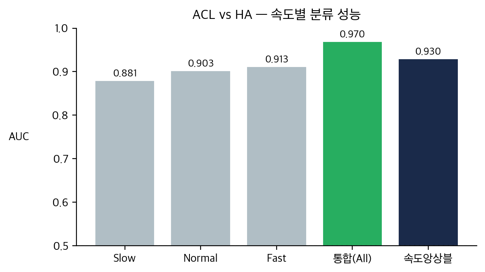
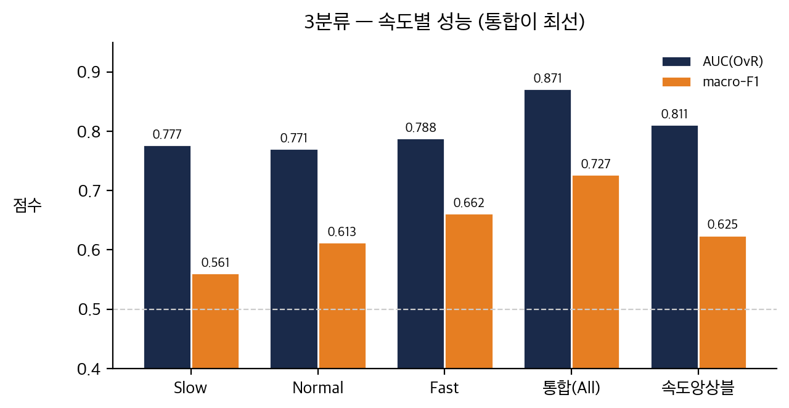
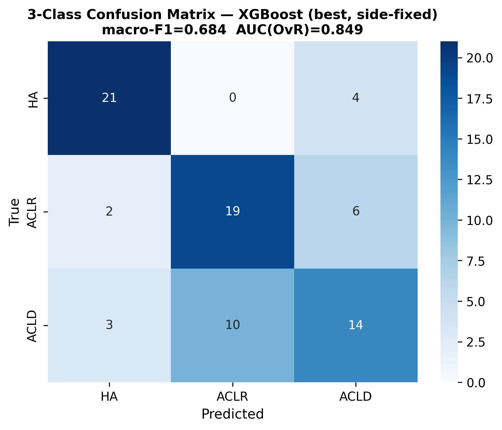
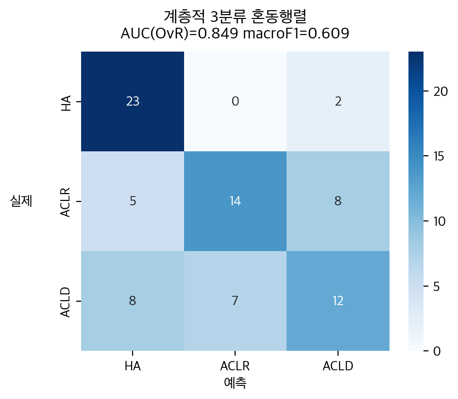
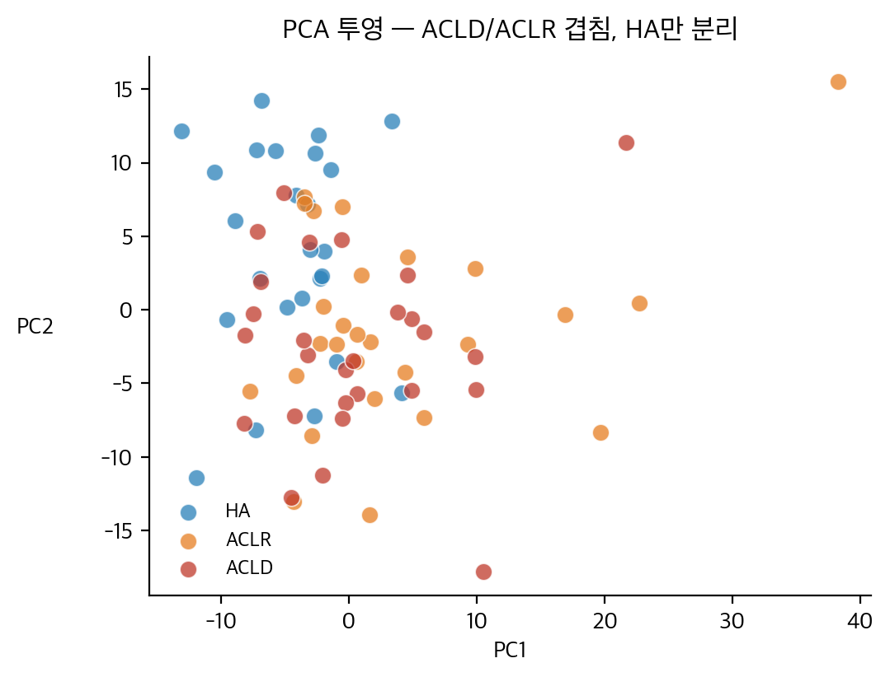
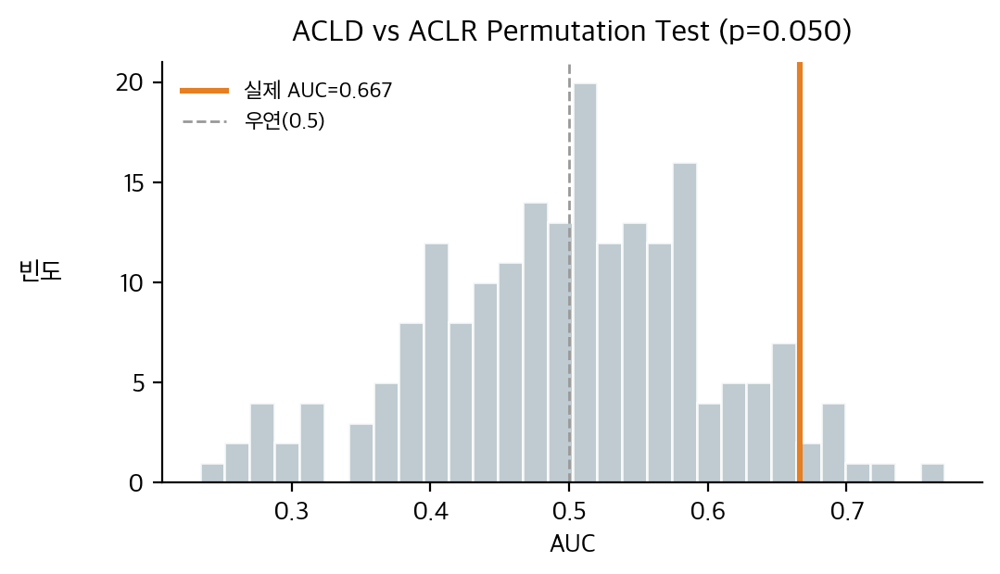

01 중간 결과에서 ML 파이프라인으로 연결된 지점
GAI 중간 결과/statistics_v1.html은 ACLD 27명, ACLR 27명, HA 25명으로 구성된 79명 다속도 IMU 보행 분석을 제시한다. 분석 축은 9개 관절 채널, slow/normal/fast 3속도, 101-point 정규화 파형, SPM1D, 스칼라 효과크기, LSI였다.
통계 중간 결과의 핵심 신호는 fast 조건의 무릎 굴곡 loading-response peak LSI였다. 이 지표는 Bonferroni 보정 후 유의했고, eta2=0.281로 가장 큰 효과크기 축에 속했다. 따라서 0611 ML 작업은 단일 속도나 단일 피처가 아니라 다속도 scalar feature와 subject-level 변동성을 결합하는 방향으로 고도화되었다.
- GAI 자료는 연구 배경과 통계적 출발점으로 사용한다.
- 모델 성능 수치는
0611_journal_ML/results와logs에서 확인된 값만 사용한다. - 현재 산출물이 없는 raw waveform/SHAP 경로는 완료 결과로 쓰지 않는다.
02 데이터 계보와 최종 학습 행렬
| 데이터/단계 | 현재 확인값 | 보고서 해석 | 근거 |
|---|---|---|---|
| 원 scalar 입력 | features_scalar.csv: 237 x 148 |
79명 x 3속도 subject-speed table | venv 검산, scripts/01_speed_ablation.py:66-76 |
| 원 stride 입력 | stride_level_peaks.parquet: 15,135 x 50 |
stride-level peak feature에서 subject-level variability 산출 | venv 검산, scripts/02b_optimal_pipeline.py:174-183 |
| scalar pivot | 78명 x 864 features | slow/normal/fast 원 피처 + fast-slow, fast-normal delta + 3속도 평균 | logs/02b_optimal.log, scripts/02b_optimal_pipeline.py:61-73 |
| stride variability | 79명 x 270 features | stride feature별 std와 coefficient of variation을 subject 단위로 집계 | logs/02b_optimal.log, scripts/02b_optimal_pipeline.py:76-94 |
| 02b 최종 행렬 | 78명 x 1,134 base features | scalar pivot의 결측 제거로 HA25가 제외됨. 이후 fold 내부 상호작용 190개 추가 | results/02b_optimal_results.json, venv 재구성 검산 |
HA25가 결측 처리 후 빠져 78명이다. 따라서 본 보고서는 source dataset n=79, final binary model n=78을 구분한다.
03 최종 이진 파이프라인 구성
학습 방식
- 과제: ACLD+ACLR을 ACL=1, HA=0으로 둔 binary classification.
- 검증:
StratifiedKFold(5, shuffle=False). 한 행이 한 피험자이므로 GroupKFold가 필요하지 않은 subject-level 행렬이다. - 누출 방지: scaler, RF feature selection, interaction construction은 각 outer fold의 train data에서 결정된 뒤 test fold에 적용된다.
- 불균형 처리: RandomForest에
class_weight='balanced'적용. - 불확실성: OOF prediction에 대해 2,000회 bootstrap percentile 95% CI를 계산.
- 02b의 side-specific variability는 코드상 injured-leg map과 stride
side값을 비교한다. 현재 stride side 값 체계가 injured/contralateral이면 Right/Left 비교와 완전히 같지 않을 수 있으므로, 본 보고서에서는 “stride variability”로 표현하고 과한 해부학적 side 해석은 피한다. - 상호작용 190개는 전체 1,134에 포함된 것이 아니라, 각 fold에서 base 1,134에 추가되는 derived terms다.
04 모델별 결과: 이진 ACL vs HA
| 실험 | Feature 구성 | 모델/튜닝 | CV | 결과 |
|---|---|---|---|---|
| 01 Speed Ablation | 단일속도 144 features 또는 all_speeds 864 features | RF, XGBoost, LightGBM, SVC-RBF 중 조건별 best. 현재 CSV best는 RF. | Outer StratifiedKFold(5), inner StratifiedKFold(3), Optuna 50 trials | slow 0.9001, normal 0.8707, fast 0.9070, all_speeds 0.9514 |
| 02b Optimal Pipeline | scalar pivot 864 + stride variability 270 + fold-local interactions 190 | RF 1000 trees, class_weight balanced, seeds 42/88 ensemble | StratifiedKFold(5, shuffle=False), OOF | AUC 0.9830, bootstrap mean 0.9831, median 0.9849, 95% CI 0.9568-0.9992 |
| 04c Integrated Speed Analysis | 04c의 all condition: 다속도 통합 + variability + interactions | 2-seed RF ensemble | StratifiedKFold(5, shuffle=False) | binary AUC 0.9704. 02b headline 0.9830과 별도 실험값 |

results/02b_optimal_results.json.Fold-level evidence
| Seed | Fold AUCs | OOF AUC |
|---|---|---|
| 42 | 1.0000, 0.9273, 1.0000, 0.9773, 1.0000 | 0.9815 |
| 88 | 1.0000, 0.9273, 1.0000, 0.9773, 1.0000 | 0.9815 |
| Mean ensemble | OOF probability average | 0.9830 |
02b_subject_predictions.csv를 threshold 0.5로 이진화하면 TP 54, TN 10, FP 14, FN 0이다. 따라서 “AUC 0.9830”과 “임계값 0.5에서 특이도 41.7%”는 서로 다른 성격의 성능 지표다.
05 속도별 분석: 다속도 통합의 의미


| Condition | Binary AUC | 3-class AUC(OvR) | 3-class macro-F1 |
|---|---|---|---|
| slow | 0.8807 | 0.7769 | 0.5608 |
| normal | 0.9033 | 0.7709 | 0.6132 |
| fast | 0.9126 | 0.7884 | 0.6617 |
| speed ensemble | 0.9304 | 0.8115 | 0.6247 |
| all | 0.9704 | 0.8712 | 0.7267 |
이 결과는 GAI 중간 결과에서 제기된 “자기선택 속도만으로는 ACL 보행 이상을 충분히 드러내기 어렵다”는 문제의식을 ML 수준에서 재확인한다. 단일 속도 중 fast가 강하지만, 최종적으로는 slow/normal/fast 정보를 하나의 subject-level feature space에 통합한 모델이 가장 높다.
06 3분류 ACLD / ACLR / HA 결과
| 실험 | 모델/파이프라인 | AUC(OvR) | macro-F1 | balanced accuracy | 비고 |
|---|---|---|---|---|---|
| 04_multiclass RF | waveform asymmetry + PCA + RF Optuna | 0.6331 | 0.4313 | 0.4326 | 초기 3분류 baseline |
| 04_multiclass XGB | waveform asymmetry + PCA + XGBoost Optuna | 0.6308 | 0.5164 | 0.5086 | macro-F1는 RF보다 높지만 AUC는 유사 |
| 04b RF optimal | scalar pivot + variability + interactions | 0.8672 | 0.6794 | 0.6741 | 02b 계열 파이프라인을 3분류에 적용 |
| 04c fixed all | 04c 통합 RF | 0.8712 | 0.7267 | not saved | 속도별 grid의 all condition |
| 04c hierarchical | Stage1 ACL vs HA, Stage2 ACLD vs ACLR | 0.8514 | 0.7035 | 0.6998 | flat보다 낮음 |
| 04c Optuna flat | 통합 RF upper-bound probe, max_depth=12, min_samples_leaf=4, max_features=0.1044 | 0.8831 | 0.7608 | not saved | 현재 3분류 최고값 |


04c_speed_analysis.py는 Optuna를 “honest upper-bound probe”로 명시한다. 즉 04c Optuna 0.8831은 엄격한 nested holdout 성능이라기보다 현재 feature/model family에서의 성능 상한 탐색으로 보고해야 한다.
07 왜 3분류가 0.98까지 가지 않는가
3분류의 병목은 HA 분리가 아니라 ACLD와 ACLR의 경계다. 04c_permutation.json에 따르면 ACLD vs ACLR 직접 binary AUC는 0.7174이고, 가벼운 CV 모델 기준 AUC는 0.6667이다. 200회 permutation null mean은 0.4994, p-value는 0.0498이다.
따라서 “이진 ACL vs HA는 매우 높은 AUC를 달성했지만, ACLD vs ACLR은 보행 피처만으로 강하게 분리되지 않는다”가 현재 코드와 결과가 지지하는 정확한 결론이다.


08 현재 완료된 경로와 미완료/탐색 경로
| 경로 | 상태 | 현재 보고 방식 |
|---|---|---|
02b_optimal_pipeline.py |
완료, 결과/로그/ROC 존재 | 최종 이진 headline 모델 |
01_speed_ablation.py |
완료, CSV/JSON 존재 | 다속도 통합의 baseline evidence |
04_multiclass.py, 04b_multiclass_optimal.py, 04c_speed_analysis.py |
완료, CSV/JSON/figures 존재 | 3분류 최대치와 ACLD/ACLR 한계 분석 |
02_raw_waveform_ml.py |
스크립트는 있으나 현재 results에 waveform 결과 산출물 없음 | 완료 결과로 주장하지 않음. 설계/탐색 경로로만 언급 |
03_shap_waveform.py |
스크립트는 있으나 현재 SHAP JSON/NPY/figure 산출물 없음 | SHAP 해석 결과로 주장하지 않음 |
09 근거 파일 목록
GAI 중간 결과/statistics_v1.htmlGAI 중간 결과/0527_main.htmlscripts/02b_optimal_pipeline.pyresults/02b_optimal_results.jsonlogs/02b_optimal.logscripts/01_speed_ablation.pyresults/01_speed_ablation_results.csvscripts/04c_speed_analysis.pyresults/04c_speed_analysis.csvresults/04_multiclass_results.csvresults/04b_multiclass_results.jsonresults/04c_optuna_comparison.jsonresults/04c_hierarchical.jsonresults/04c_permutation.json